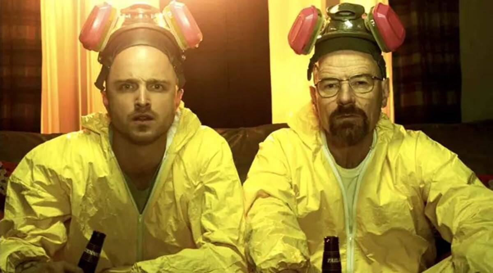

Whatever happened to Jesse Pinkman? Finally, after all these years, we find out with El Camino: A Breaking Bad Movie. To celebrate, Consequence of Sound will be publishing several articles straight outta New Mexico. Kicking things off is senior writer Andrew Bloom, who catches us up on the slacker meth cook.
The mild-mannered, middle-aged dad becomes a cold, remorseless killer. The put-upon chemistry teacher evolves into a vicious drug lord. As series creator Vince Gilligan famously put it, Mr. Chips turns into Scarface. That transformation is the backbone of Breaking Bad and one of the most convincing and compelling character shifts in television history. With that, Walter White (Bryan Cranston) understandably takes up a lot of oxygen in discussions of the show. And yet, focusing on the slow, disquieting arrival of Heisenberg within the broader trajectory of the show ignores how it’s only one half of the grand irony and reversal at the core of the series.
The mild-mannered, middle-aged dad becomes a cold, remorseless killer. The put-upon chemistry teacher evolves into a vicious drug lord. As series creator Vince Gilligan famously put it, Mr. Chips turns into Scarface. That transformation is the backbone of Breaking Bad and one of the most convincing and compelling character shifts in television history. With that, Walter White (Bryan Cranston) understandably takes up a lot of oxygen in discussions of the show. And yet, focusing on the slow, disquieting arrival of Heisenberg within the broader trajectory of the show ignores how it’s only one half of the grand irony and reversal at the core of the series.
It’s a view Jesse’s parents share, kicking him out of the house for drug abuse and treating him like a rank disappointment. But after hitting rock bottom, the former “Cap’n Cook” starts to put his life back together. Jesse finds a new place to live. He gets through rehab and gets clean. And he finds new relationships to sustain him. While Walt’s journey in Breaking Bad is one of increasing isolation and alienation, Jesse’s is one of reckoning with his woebegotten past and forging connections with other people to help make a better future.
He comes to love Jane, to love Andrea, and to love Brock. And while, given the nature of the show, those relationships eventually cause him great loss and immense pain, those hardships have meaning because these people saw something worthwhile — something worth loving — in Jesse.
But they’re not the only ones who saw something in him. Although at first, Gus simply wanted to drive a wedge between Walt and Jesse, he eventually enlists the younger half of their duo to become a bigger part of his operation. Jesse shows talent and promise as a foot soldier in Fring’s empire, something that gives him a purpose and helps lift him out of his depression. At the same time, Mike also develops a fatherly affection for the kid, showing him a level of trust and respect that Walter never receives. For what feels like the first time in Jesse’s life, people seem to recognize the potential in this young, rough-around-the-edges punk and take him under their wings.
And with that trust, over time, Jesse becomes capable of rivaling Walt’s prodigious talents in this dangerous and demanding business. He goes from being the bumbling lab assistant, the shiftless bum whose only asset is his connections to local drug dealers, to becoming an equal, indispensable part of the team, who can cook on his own, work toward a stable life, and through some bizarre circumstances, start to realize his long-buried potential. It’s a long journey, but one just as earned as Walt’s transformation from high school faculty member to cartel boogeyman.
But Jesse also has a moral awakening that mirrors Walt’s moral descent. As Heisenberg steadily becomes more and more comfortable with death, with criminality, and others suffering at his hands, Jesse becomes less and less able to stomach the horrors he’s been a part of. There’s a wounded, empathetic soul unearthed from beneath his mortgaged future and young adult bravado.
His good nature peeked out early on in the series, when Jesse told Walt about his experiences looking after his terminally ill aunt. It reveals that, however impudent and uncouth he may be, this is a young man who feels something for the people around him. He feels Combo’s death. He feels Jane’s death. And most of all, he feels Gale’s death, the first one to come directly at his hands, and it utterly destroys him. As a result, Jesse falls back into drugs and hedonism to try to cope with it. When that fails, he tries to repair the damage he’s caused in the world, to the people caught in his orbit. He wants to give Andrea and Brock the money to escape. He tries to extricate himself from their lives so as not to cause them anymore harm. And when all of that still crumbles, when it fails to give him the relief he seeks, he still carries the weight of the misery and death he’s caused.
As Walt grows more inured to the mortal cost of their work, Jesse grows more disturbed by it. That sensitivity goes unnoticed by the likes of the Schraders who, given Jesse’s rough exterior and line of work, still consider him trash. But gone is the oblivious, wannabe gangster, and in his place is a young man who feels the moral degradation of his actions too deeply and acutely to go on.
>So, when a small boy, whose only misfortune is to stumble onto Walt’s crew’s great train robbery, is killed for it, Jesse can take no more. He gives up on the drug business. He tries to give away his ill-gotten gains to the family of the young man who was killed and to Mike’s granddaughter rather than hang onto the blood money. He gives away bundles of cash at random, trying to rid himself of its taint. In short, he tries to buy back his soul, a soul that had once been written off by almost everyone around him. BY ANDREW BLOOMON OCTOBER 07, 2019, 9:30AM El Camino: A Breaking Bad Movie (Netflix) El Camino: A Breaking Bad Movie (Netflix) FACEBOOK TWITTER REDDIT Breaking Bad Week
Whatever happened to Jesse Pinkman? Finally, after all these years, we find out with El Camino: A Breaking Bad Movie. To celebrate, Consequence of Sound will be publishing several articles straight outta New Mexico. Kicking things off is senior writer Andrew Bloom, who catches us up on the slacker meth cook. The mild-mannered, middle-aged dad becomes a cold, remorseless killer. The put-upon chemistry teacher evolves into a vicious drug lord. As series creator Vince Gilligan famously put it, Mr. Chips turns into Scarface. That transformation is the backbone of Breaking Bad and one of the most convincing and compelling character shifts in television history. With that, Walter White (Bryan Cranston) understandably takes up a lot of oxygen in discussions of the show. And yet, focusing on the slow, disquieting arrival of Heisenberg within the broader trajectory of the show ignores how it’s only one half of the grand irony and reversal at the core of the series. Because Breaking Bad didn’t just surprise its audience by showing that a meek, ostensibly upstanding high school teacher could, unbeknownst even to himself, actually be an amoral, self-gratifying criminal at heart. It also showed us that the reprobate, profanity-spouting high school dropout Walter White begrudgingly turns to could turn out to be capable of far grander accomplishments than anyone thought possible. And more importantly, it showed us that Jesse Pinkman (Aaron Paul), the libertine, black sheep on the run from the law, would ultimately have the bigger, more sensitive heart than the middle-class father of two, providing the moral counter-reaction to all the humanity “Mister White” loses along the way. That too is a transition no one in the world of Breaking Bad saw coming. Early in the series, Walt admits that he never expected his young co-conspirator to amount to much. Walt keeps a constant eye on Jesse, especially at the outset of their scheme, regularly scolding his young partner for his ignorance and recklessness and aiming to bend Jesse to his needs at every turn. Walt may eventually come to view Jesse as a son, but at the start of their relationship, he sees Jesse as little more than a pain-in-the-ass, necessary evil — someone seemingly destined to burn out and fade away whenever Walt’s done with him. It’s a view Jesse’s parents share, kicking him out of the house for drug abuse and treating him like a rank disappointment. But after hitting rock bottom, the former “Cap’n Cook” starts to put his life back together. Jesse finds a new place to live. He gets through rehab and gets clean. And he finds new relationships to sustain him. While Walt’s journey in Breaking Bad is one of increasing isolation and alienation, Jesse’s is one of reckoning with his woebegotten past and forging connections with other people to help make a better future. He comes to love Jane, to love Andrea, and to love Brock. And while, given the nature of the show, those relationships eventually cause him great loss and immense pain, those hardships have meaning because these people saw something worthwhile — something worth loving — in Jesse. But they’re not the only ones who saw something in him. Although at first, Gus simply wanted to drive a wedge between Walt and Jesse, he eventually enlists the younger half of their duo to become a bigger part of his operation. Jesse shows talent and promise as a foot soldier in Fring’s empire, something that gives him a purpose and helps lift him out of his depression. At the same time, Mike also develops a fatherly affection for the kid, showing him a level of trust and respect that Walter never receives. For what feels like the first time in Jesse’s life, people seem to recognize the potential in this young, rough-around-the-edges punk and take him under their wings. And with that trust, over time, Jesse becomes capable of rivaling Walt’s prodigious talents in this dangerous and demanding business. He goes from being the bumbling lab assistant, the shiftless bum whose only asset is his connections to local drug dealers, to becoming an equal, indispensable part of the team, who can cook on his own, work toward a stable life, and through some bizarre circumstances, start to realize his long-buried potential. It’s a long journey, but one just as earned as Walt’s transformation from high school faculty member to cartel boogeyman. But Jesse also has a moral awakening that mirrors Walt’s moral descent. As Heisenberg steadily becomes more and more comfortable with death, with criminality, and others suffering at his hands, Jesse becomes less and less able to stomach the horrors he’s been a part of. There’s a wounded, empathetic soul unearthed from beneath his mortgaged future and young adult bravado. His good nature peeked out early on in the series, when Jesse told Walt about his experiences looking after his terminally ill aunt. It reveals that, however impudent and uncouth he may be, this is a young man who feels something for the people around him. He feels Combo’s death. He feels Jane’s death. And most of all, he feels Gale’s death, the first one to come directly at his hands, and it utterly destroys him. As a result, Jesse falls back into drugs and hedonism to try to cope with it. When that fails, he tries to repair the damage he’s caused in the world, to the people caught in his orbit. He wants to give Andrea and Brock the money to escape. He tries to extricate himself from their lives so as not to cause them anymore harm. And when all of that still crumbles, when it fails to give him the relief he seeks, he still carries the weight of the misery and death he’s caused. As Walt grows more inured to the mortal cost of their work, Jesse grows more disturbed by it. That sensitivity goes unnoticed by the likes of the Schraders who, given Jesse’s rough exterior and line of work, still consider him trash. But gone is the oblivious, wannabe gangster, and in his place is a young man who feels the moral degradation of his actions too deeply and acutely to go on. So, when a small boy, whose only misfortune is to stumble onto Walt’s crew’s great train robbery, is killed for it, Jesse can take no more. He gives up on the drug business. He tries to give away his ill-gotten gains to the family of the young man who was killed and to Mike’s granddaughter rather than hang onto the blood money. He gives away bundles of cash at random, trying to rid himself of its taint. In short, he tries to buy back his soul, a soul that had once been written off by almost everyone around him. In the end, that soul is what defines him, what distinguishes him from the company he keeps. In the final frame, he breaks free of Walt’s manipulations, refusing to be the tool of what this monster does or doesn’t want, reclaiming his own agency and purpose after so many people used him as a mere pawn on the chessboard. It is the culmination of so many little steps, so many little changes that both made him and revealed him as someone and something better than the other driving force of the series. When we meet Jesse, he is a criminal, a drug dealer, and a slacker amid the dregs of society. When we leave him, he is a changed man, with remarkable abilities that have been realized for ill but also sworn off by someone striving to make amends and a heart forged in abject suffering and moral epiphanies. As Walter White slowly fell into the shadows, Jesse Pinkman just as steadily crawled into the light. That’s the one thing that can justify El Camino. Nobody needs a sequel film to such a close-ended show. But the final stretch of Breaking Bad was, understandably, more Walt’s story than Jesse’s, a way to put a period on Walt’s personal journey while Jesse’s ends with an ellipsis. If there’s any good reason to go on, it’s to honor that equal and opposite transformation, from a layabout, futureless fuck-up to the capable, intelligent, unexpected moral center of the series that Jesse Pinkman became and the grand potential that he could still realize down the open road with all that lies ahead.